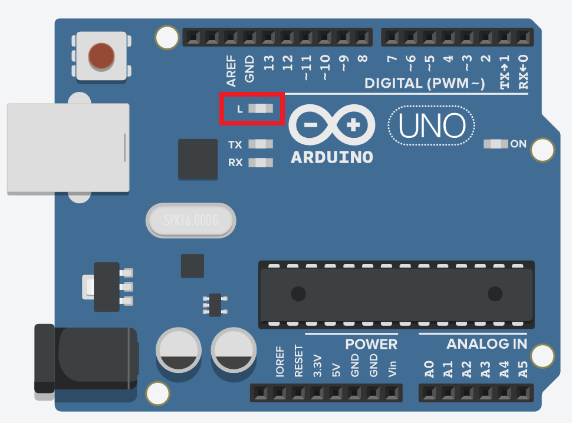
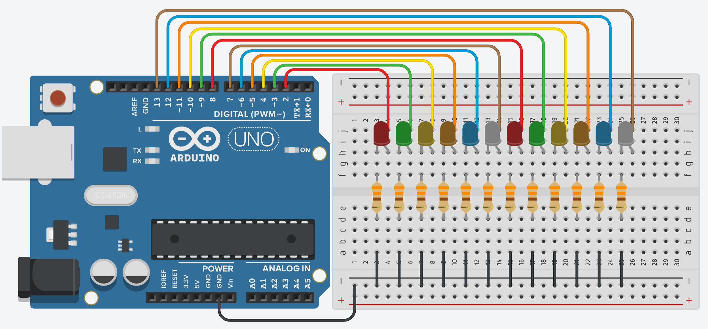
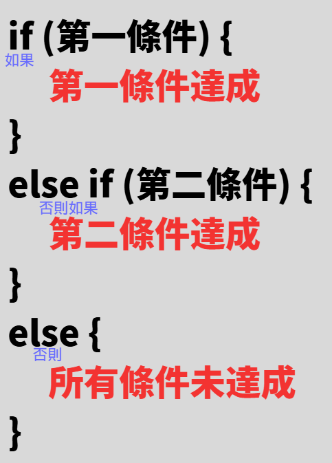
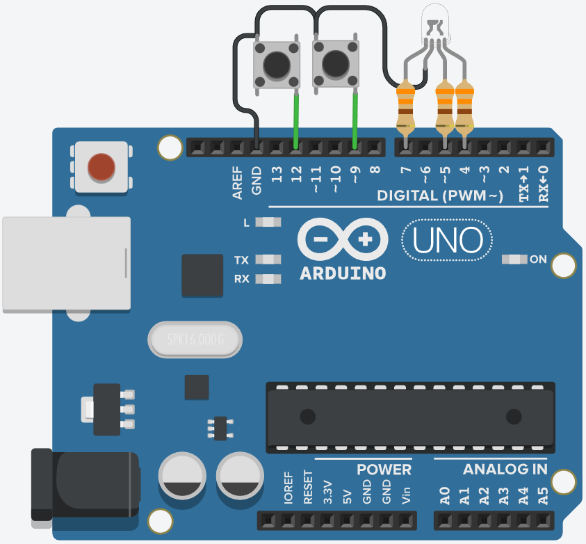

Arduino 介紹
Arduino是一個開源的微控制器開發平台，結合了簡單易用的硬體電路板和基於C/C++的軟體開發環境 (IDE)，讓初學者和專業人士都能輕鬆製作能感應環境並控制電子元件的互動式裝置 (如下圖)。
.png)
LED 閃爍 (Blink)
Arduino 入門實習，讓內建的 LED 每秒閃爍一次。
void setup() {
pinMode(13, OUTPUT); // 設定第13接腳為輸出
}
void loop() {
digitalWrite(13, HIGH); // 點亮 LED
delay(1000);
digitalWrite(13, LOW); // 熄滅 LED
delay(1000);
}

● Arduino上的LED的腳位與D13腳位串接，寫程式時直接寫13即可
for迴圈
在Arduino語法中，若要執行超過兩次的重複動作，就可以用for迴圈來撰寫，先設定初始變數 i 當作迴圈變數，下一段指定迴圈的範圍，最後一段指令迴圈的動作是要加還是減
● for迴圈範例： (使用Tinkercad模擬軟體)

// 定義 LED 使用的 12 個腳位（用陣列管理）
const int pins[] = { 2, 3, 4, 5, 6, 7, 8, 9, 10, 11, 12, 13 };
void setup() {
// 使用 for 迴圈，將所有 LED 腳位設為輸出
for (int i = 0; i < 12; i++) pinMode(pins[i], OUTPUT);
}
void loop() {
for (int i = 0; i < 12; i++) { // LED 由左到右依序亮起
digitalWrite(pins[i], 1); // 第 i 顆 LED 亮
delay(100);
}
for (int i = 0; i < 12; i++) { // LED 由左到右依序熄滅
digitalWrite(pins[i], 0); // 第 i 顆 LED 滅
delay(100);
}
for (int i = 11; i >= 0; i--) { // LED 由右到左依序亮起
digitalWrite(pins[i], 1); // 第 i 顆 LED 亮
delay(100);
}
for (int i = 11; i >= 0; i--) { // LED 由右到左依序熄滅
digitalWrite(pins[i], 0); // 第 i 顆 LED 滅
delay(100);
}
for (int j = 0; j < 3; j++) { // 整組奇偶閃爍重複 3 次
for (int i = 0; i < 12; i += 2)
digitalWrite(pins[i], 1); // 偶數索引 LED（0,2,4...）亮
for (int i = 1; i < 12; i += 2)
digitalWrite(pins[i], 0); // 奇數索引 LED（1,3,5...）滅
delay(200);
for (int i = 0; i < 12; i += 2)
digitalWrite(pins[i], 0); // 偶數索引 LED 滅
for (int i = 1; i < 12; i += 2)
digitalWrite(pins[i], 1); // 奇數索引 LED 亮
delay(200);
}
for (int i = 0; i < 12; i++) digitalWrite(pins[i], LOW); // LED 最後都熄滅
}
● for迴圈如果需要執行一行程式碼，則不需要大括號，一行以上則需要，if也是同觀念
if判斷式
if判斷式用來根據條件執行不同的程式碼區塊，基本語法如下：


● if 判斷按鈕實作： (使用Tinkercad模擬軟體)

#define Red 7 // 定義紅燈接在第 7 腳
#define Blue 5 // 定義藍燈接在第 5 腳
#define Green 4 // 定義綠燈接在第 4 腳
#define ButtonPin1 12 // 定義按鈕1接在第 12 腳
#define ButtonPin2 9 // 定義按鈕1接在第 9 腳
void setup() {
pinMode(Red, OUTPUT);
pinMode(Blue, OUTPUT);
pinMode(Green, OUTPUT);
// 使用內建上拉電阻，按鈕未按下時為 1，按下時為 0
pinMode(ButtonPin1, INPUT_PULLUP);
pinMode(ButtonPin2, INPUT_PULLUP);
}
void loop() {
// 讀取按鈕狀態 (0 代表按下)
int btn1 = digitalRead(ButtonPin1);
int btn2 = digitalRead(ButtonPin2);
// !btn => btn == 0
if (!btn1) LED_Control(2); // 當按鈕 1 被按下，切換到模式 2 (亮藍燈)
else if (!btn2) LED_Control(3); // 按鈕 1 沒按，按鈕 2 按下，切換到模式 3(亮綠燈)
else LED_Control(1); // 兩個都沒按時，維持模式 1 (亮紅燈)
}
// 燈號控制函式：根據傳入的數字切換燈號
void LED_Control(int number) {
// 邏輯判斷：若 number 等於對應數字，則該腳位輸出 HIGH (1)
digitalWrite(Red, number == 1);
digitalWrite(Blue, number == 2);
digitalWrite(Green, number == 3);
}
紅綠燈實作
利用紅、黃、綠三顆 LED，模擬馬路上的紅綠燈切換邏輯，紅燈亮5秒，綠燈亮3秒，黃燈亮2秒。
所需材料： 紅/黃/綠 LED、220Ω 電阻 x3、麵包板。(電路接法如下圖)

#define traffic_light_Red 2 // 定義紅燈接在 Arduino 腳位 2
#define traffic_light_Yellow 3 // 定義黃燈接在 Arduino 腳位 3
#define traffic_light_Green 4 // 定義綠燈接在 Arduino 腳位 4
void setup() {
// 使用 for 迴圈，將 2~4 腳位設為輸出（紅黃綠燈）
for (int i = 2; i <= 4; i++) pinMode(i, OUTPUT);
}
void loop() {
traffic_light_Control(1); // 呼叫函式，顯示紅燈
delay(5000);
traffic_light_Control(3); // 呼叫函式，顯示綠燈
delay(3000);
traffic_light_Control(2); // 呼叫函式，顯示黃燈
delay(2000);
}
// 副程式寫法
void traffic_light_Control(int number) {
// 當 number 為 1 時紅燈亮，其餘時間熄滅
digitalWrite(traffic_light_Red, number == 1);
// 當 number 為 2 時黃燈亮，其餘時間熄滅
digitalWrite(traffic_light_Yellow, number == 2);
// 當 number 為 3 時綠燈亮，其餘時間熄滅
digitalWrite(traffic_light_Green, number == 3);
}